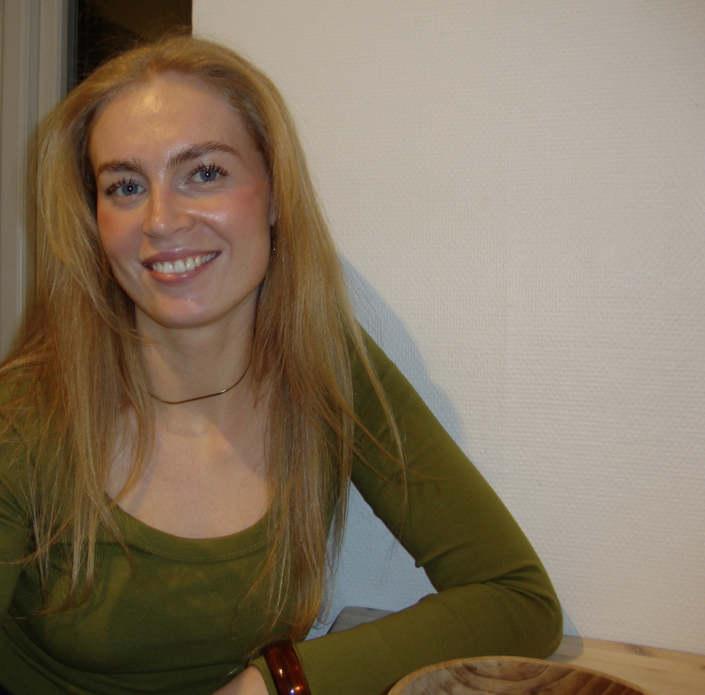

Velkommen til min portfolio
Her laver jeg forside
Om mig

Mit navn er Helena Højstrup, og jeg vil i denne portfolio fortælle lidt om mig, og hvem jeg er, samt min skoletid og
erhvervserfaring. Jeg er 24 år gammel, og jeg er født og opvokset i Thy, Nordjylland,
men jeg flyttede til København i sommeren 2025. Jeg er lige startet på uddannelsen IT-Arkitektur
på Erhvervsakademi København. I min fritid spiller jeg fodbold tre gange om ugen, samt
nyder jeg tid med mine venner og en løbetur en gang imellem. Derudover flyver jeg til Nordjylland ved hver en
lille anledning for at se min familie, så tit jeg kan😁
Programmering og arbejdet med IT er helt nyt for mig, og som jeg plejer at sige, når folk spørger, så ved jeg
faktisk ikke noget som helst🤷🏼♀️ Dog er jeg utrolig interesseret i denne uddannelse, og jeg er egentlig
bare spændt på det hele og klar til at lære en masse om IT.
Skoler og uddannelse
Jeg gik på en meget lille folkeskole med kun 120 elever til og med niende klasse i min hjemby, Frøstrup.
Herefter tog jeg en tiende klasse på en idrætsefterskole i Holstebro. Efter grundskolen gik jeg på Thisted
Gymnasium i tre år, da jeg tog en STX på den sproglige linje.
Efter gymnasiet flyttede jeg så til Australien, hvor jeg boede i to år, og har derfor ikke taget mere uddannelse
før nu, hvor jeg, som sagt, er begyndt på IT-Arkitektur. Her er en række af skoler og uddannelser, samt årstal:
- 08-18 - Frøstrup Folkeskole
- 18-19 - Idrætsefterskolen Lægaarden
- 19-22 - Thisted Gymnasium
- 22-24 - Udenlandsophold
- 26- - Erhvervsakademi København
Arbejdserfaring
Jeg har arbejdet mange forskellige steder og forskellige brancher. Både som ungarbejder og i min gymnasietid, men også da jeg boede i Australien. Dog har jeg aldrig arbejdet med IT før, og har derfor desværre ikke nogen erfaring. Jeg har tværtimod fået en masse erfaring inden for andre områder, som også har lært mig utrolig meget om, hvordan arbejdspladser fungerer og samarbejde. Disse jobs har blandt andet været:
- Detailhandel
- Restaurationsbranchen
- Pædagogisk arbejde i handicap- og børneområdet
- Trafikstyring i Australien
Alle disse jobs har på deres egen måde ledt mig mod interessen for IT og lysten til at lære at arbejde med det.